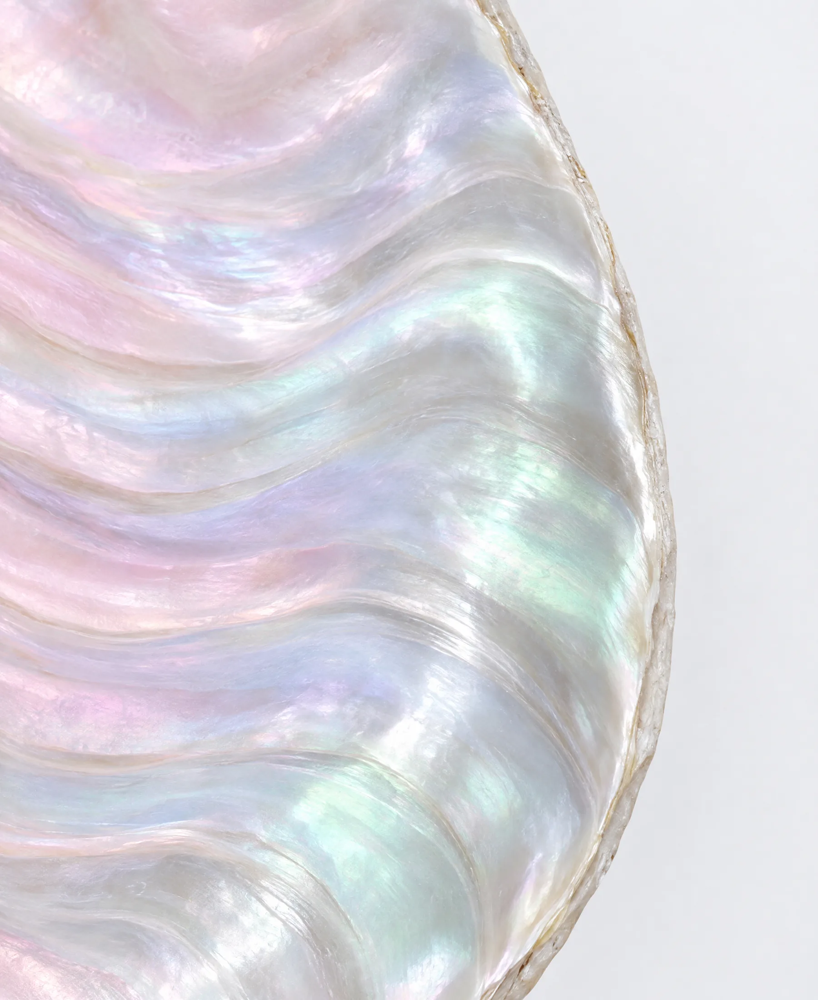

Clinic matching
Licensed clinics chosen for your case, with plans and prices in writing.
- Licensed dentists experienced in implants
- 3D diagnostics (CBCT) on site
- Written treatment plan and price
- English-speaking team
Dental concierge in Gdańsk
We match you with a trusted clinic and coordinate your treatment, from first question to follow-up at home.

Nacre is not a clinic. We are your independent coordinator: we find the right licensed clinic, organise your treatment and stay with you throughout.
All treatment is planned and performed by the clinic's own licensed dentists.

Tell us what you are considering. We reply personally with questions and next steps.
You receive a written treatment plan and price from the clinic before you book anything.
We schedule your appointments, can arrange airport transfers and recommend hotels close to the clinic.
Back home, we stay in touch and coordinate any follow-up with your clinic.
Licensed clinics chosen for your case, with plans and prices in writing.
On request, a driver meets you at the airport and takes you to your appointments.
Quiet hotels close to your clinic, which you book directly.
The same coordinator from your first message to your final check.

Follow-up after you return, arranged together with your clinic.
The clinic confirms which treatment suits you after an examination.

Direct flights from Oslo, Stockholm, Copenhagen, Helsinki and other Nordic cities, plus ferries from Sweden. Between appointments: the old town, the seaside at Sopot and good food.

Why Nacre
Nacre is the luminous layer a shell builds, layer by layer, to protect what is inside. It is strong, smooth and quietly beautiful.
It is also one of the oldest known dental implant materials. Around 600 AD, the Maya replaced missing teeth with pieces of shell, and the bone grew around them.
That is the kind of care we stand for: patient, careful work that protects you.
No. Nacre is an independent coordination service. The licensed clinic you choose is responsible for diagnosis and treatment.
We work with licensed clinics in Gdańsk with experienced specialists, English-speaking staff and clear written treatment plans.
Before you commit, you receive a written quote with the clinic's treatment costs and our concierge fee shown separately.
It depends on the treatment. Implants usually need two visits a few months apart, while crowns or veneers can often be done in one stay. The clinic confirms this in your plan.
Contact your coordinator. We pass your questions to the clinic, arrange a video consultation if needed and help plan any follow-up visit.
No obligation
We read every request ourselves and reply personally with the next steps.
Please do not send medical records yet. We will ask for them securely if needed.
We will reply to the email address you gave us.